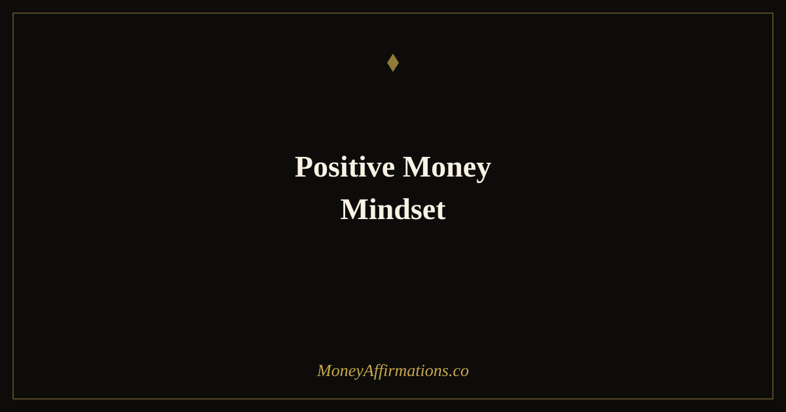

Positive Money Mindset: 30 Affirmations to Transform Your Financial Life

Most people have a running inner commentary about money that they have never consciously chosen. It was absorbed from family conversations overheard in childhood, from cultural messages about who deserves wealth and who does not, from the accumulated emotional weight of financial stress and setback. That commentary runs in the background of every financial decision, shaping choices in ways that often feel like facts rather than thoughts.
A positive money mindset is not about pretending financial problems do not exist or forcing artificial cheerfulness about your bank balance. It is the deliberate practice of catching the negative, scarcity-driven thoughts when they arise and replacing them with something more constructive, more accurate, and more useful. These 30 affirmations are designed for exactly that moment — the daily work of choosing a better thought about money, one replacement at a time.
What are positive money mindset affirmations?
Positive money mindset affirmations are present-tense statements that directly replace negative financial self-talk with thoughts that support clarity, confidence, and constructive action. While broader financial mindset work covers strategies and frameworks, these affirmations operate at the granular level of the individual thought — the specific words that run through your mind when you check your balance, face a bill, consider an investment, or compare yourself to others financially.
The goal is to make positive money language habitual — the default rather than the deliberate choice. These affirmations are closely related to our full money affirmations collection, which offers 100 statements for building a comprehensive, healthy relationship with money across all its dimensions.
30 positive money mindset affirmations
- I speak positively about money, and that positivity shapes my financial reality.
- Every negative money thought I have is a signal to choose a better one immediately.
- My money thoughts are kind, generous, and full of expectation.
- I replace "I can't afford it" with "I am choosing where to focus my financial energy."
- I think about money the way I think about a reliable, supportive friend — with warmth and trust.
- My inner financial voice is encouraging, honest, and solution-focused.
- I have trained my mind to notice financial possibilities rather than only financial problems.
- I respond to money stress with calm, deliberate thinking rather than panic or shame.
- The words I use about money become the beliefs I hold, and I choose those words with care.
- I see my financial situation as improvable, not fixed.
- I am always finding new ways to improve my relationship with money.
- When a negative money thought arrives, I thank it for appearing and choose again.
- I catch scarcity thinking quickly and replace it with an honest, constructive alternative.
- I am capable of earning more, saving more, and growing more than I currently believe.
- My financial narrative is one of steady, meaningful progress.
- I talk about money with the same ease and confidence I bring to other areas of my life.
- I refuse to let old, inherited beliefs about money limit what I allow myself to earn.
- My thoughts about money today are creating my financial experience tomorrow.
- I am generous in how I think about my own financial capacity and potential.
- I notice when comparison creates scarcity thinking and I return to my own path immediately.
- Money is a tool I understand, respect, and work with positively.
- I replace fear-based financial decisions with thoughtful, confident ones.
- I give my financial future the benefit of the doubt, not the weight of past struggle.
- My positive money language is getting more natural and more automatic every day.
- I speak about my financial goals as achievable, because they are.
- I am building a healthier money relationship one conscious thought at a time.
- I no longer use money as a measure of my worth as a person.
- My financial decisions come from a place of confidence and calm, not anxiety and lack.
- I think expansively about what is financially possible for me.
- The most important financial habit I have is the daily choice of a positive, constructive money thought.
How to use these affirmations
These affirmations are most useful as a replacement toolkit — a set of ready statements you can reach for the moment a negative money thought arrives. The first step is simply to start noticing your negative money thoughts. Most people have dozens per day that pass unexamined: "I'll never get out of debt," "people like me don't build real wealth," "money always leaves me," "I'm terrible with money." These feel like observations, but they are habitual thoughts — and habitual thoughts can be changed.
Keep a short list of five to seven affirmations from this collection that most directly counter your most common negative patterns. Write them on a card or set them as a phone reminder. When a negative money thought appears, pause — even for two seconds — and consciously choose the replacement statement. You do not need to believe it immediately and completely. You only need to choose it. Repeated choice, over weeks, builds genuine belief.
A morning session of five to ten minutes reading through the full list is also valuable for priming your thinking at the start of the day. Begin before you check financial accounts, read news, or engage with anything that might activate scarcity thinking. Setting a positive money tone in the morning makes it easier to maintain through the day's inevitable challenges.
How positive money self-talk changes financial decision quality
The link between the language you use and the decisions you make is one of the most robust findings in cognitive psychology. Research on cognitive reframing — the deliberate substitution of one interpretation of a situation for another — shows consistently that how you frame a problem shapes the range of solutions you consider and the quality of the choice you ultimately make.
Applied to money, this is especially significant. Financial decisions made from a state of scarcity thinking are measurably inferior to the same decisions made from a state of abundance thinking. A 2013 study by Mullainathan and Shafir showed that financial stress consumes cognitive bandwidth in ways that reduce IQ-equivalent performance on decision tasks — not because stressed people are less capable, but because scarcity preoccupies the mind, leaving fewer cognitive resources for the complex trade-offs that good financial decisions require.
Positive money language acts as a partial buffer against this effect. When your internal financial narrative is constructive and forward-looking rather than shameful and closed, you approach financial decisions with more of your full cognitive capacity available. You evaluate options more carefully, consider longer time horizons, and weigh trade-offs with less emotional distortion. The decision you make from a positive money mindset is, on average, a better decision than the one you make from financial anxiety.
There is also an effect on what you attempt. People who hold positive money beliefs set larger financial goals, ask for larger salaries, invest more actively, and negotiate more boldly — not because they ignore risk, but because their default interpretation of financial risk is "manageable challenge" rather than "certain failure." Over years, this difference in ambition and willingness to act compounds into dramatically different financial outcomes.
Tips to make these affirmations work faster
- Audit your current money language. Spend one day simply noticing every thought you have about money — the quick internal comments when you see a price, check a balance, or think about your financial future. Write them down without judgement. This audit reveals your actual starting point and tells you which affirmations to prioritise.
- Create a direct replacement pair. For each of your most common negative money thoughts, write the specific affirmation from this list that most directly counters it. Keep that pair where you will see it — on a sticky note, in a journal, as a phone wallpaper. Having the replacement ready reduces the gap between noticing and choosing.
- Use transitions as practice moments. Every time you move between tasks — standing up from a desk, walking to a different room, waiting for something to load — use those ten seconds for one affirmation. These micro-practices accumulate significant repetition across a day without requiring dedicated time.
- Speak about money positively in conversation. Notice when you are about to say something negative about your finances to another person, and experiment with a more constructive framing instead. Social speech is a powerful reinforcement tool — what you say out loud to others tends to become more fully believed than what you only think privately.
- Track behavioural changes, not just feelings. After two to three weeks, look for evidence that your financial behaviour is changing: are you checking your accounts with less dread, making decisions more calmly, pursuing opportunities you would previously have dismissed? These behavioural shifts are more reliable indicators of genuine mindset change than moment-to-moment emotional state.
Frequently Asked Questions
What is a positive money mindset?
A positive money mindset is the habitual practice of thinking about money in ways that are constructive, expectant, and self-respecting rather than fearful, shameful, or scarcity-driven. It does not mean ignoring financial problems or pretending everything is fine. It means choosing thoughts about money that open doors rather than close them — thoughts that support action, confidence, and the belief that your financial situation can improve through deliberate effort.
How do I change negative money thoughts?
The most effective method for changing negative money thoughts is cognitive reframing — noticing the negative thought, naming it explicitly, and then deliberately choosing a more constructive alternative. Affirmations support this by providing a ready replacement thought. The process is: notice the negative thought ("I can never get ahead financially"), pause rather than accept it, and replace it with a prepared positive statement ("I am always finding new ways to improve my financial position"). Repeated enough times, the replacement becomes the default.
How quickly can a positive money mindset change my finances?
The internal shift — feeling less anxious about money, making calmer financial decisions, noticing more opportunities — can begin within two to four weeks of consistent daily practice. The external financial results depend on the actions that improved thinking prompts, and those take longer to materialise. Expect mindset changes to produce measurable behavioural changes within a month, and meaningful financial changes within three to six months of sustained practice paired with deliberate financial action.
To build the positive money language habit within a broader collection of financial affirmations, explore the money affirmations collection — 100 statements covering every dimension of a healthy, confident, and prosperous relationship with money.